Captiva |
||||||||
|
|
|
|||||||
Ilustración | Nº de herramienta / Descripción |
|---|---|

| CH 48027 DW 100-010 EN 49495 J 21867 El manómetro digital |

| DT 5590 J 5590 J 24254 Arrastrador de junta y cojinete |
|
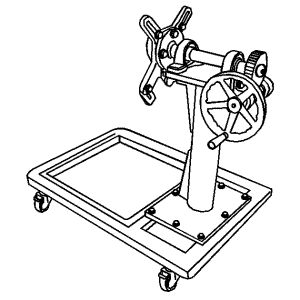 | DW 110-030 Soporte de reparación del motor |
|
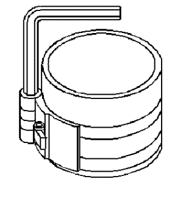 | EN 8037 J 8037 Compresor de segmentos |

| EN 8062 J 8062 Compresor de muelles de válvula, sin cabeza |

| EN 8087 J 8087 Micrómetro de diámetros de cilindro |
|
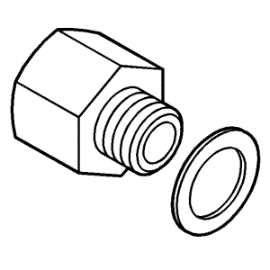 | EN 21867-6 J 21867-6 83 93 852 Accesorio adaptador de presión de aceite |

| EN 22738-B J-22738-B Aparato de verificación de muelles de válvula |
|
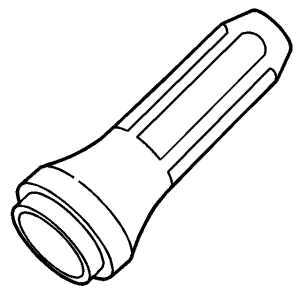 | EN 24254-A J 24254-A J 24254 Herramienta de montaje del retén de aceite |

| EN 28410 J 28410 Herramienta de desmontaje de juntas |

| EN 28467-B DW 110-060 J-28467-B Dispositivo de soporte del motor universal |
|
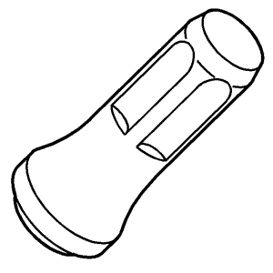 | EN 29184 EN 47635 & J 41998-B EN 47635 J 29184 Herramienta de montaje del retén de aceite |

| EN 35667-A J 35667-A Aparato de verificación de fugas en culata |
|
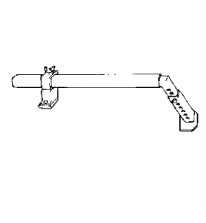 | EN 36462-A J 36462-A Pata adaptadora del soporte del motor |
|
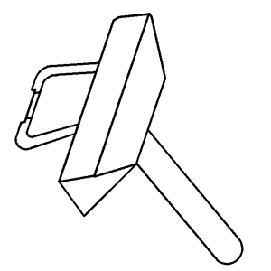 | EN 37228 J 37228 KM J 37228 Cortajuntas |
|
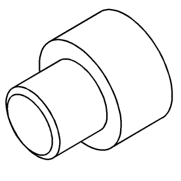 | EN 38416-2 J 38416-2 Botón del cigüeñal |

| EN 39313 J 39313 Adaptador de lumbrera de bujía |
|
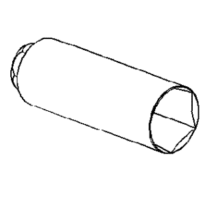 | EN 41712 J 41712 Llave del interruptor de presión de aceite |
|
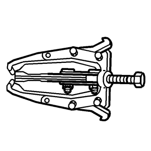 | EN 41816 J 41816 Herramienta de desmontaje del dámper del cigüeñal |
|
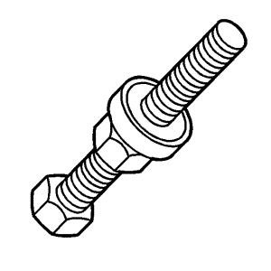 | EN 41998-B J 41998-B J 41998 Herramienta de instalación del balancín del cigüeñal |
|
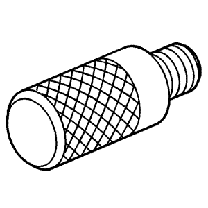 | EN 42183 J 42183 Mango de accionamiento |
|
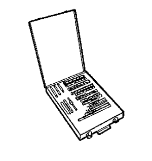 | EN 42385-700 J 42385-700 Juego de reparación de roscas High Feature |
|
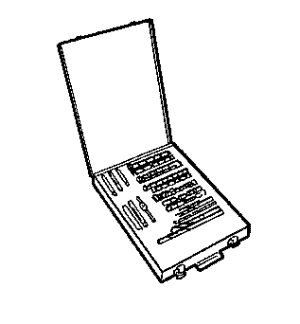 | EN 42385-2000 J 42385-2000 Juego de suplementos de rosca |
|
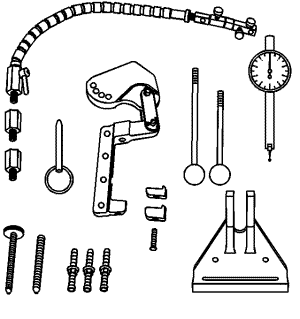 | EN 43690-A J 43690-A Herramienta de comprobación de la holgura del cojinete de biela |
|
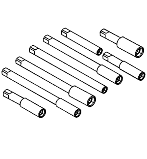 | EN 43965 J 43965 Juego de extensiones de reparación de roscas |
|
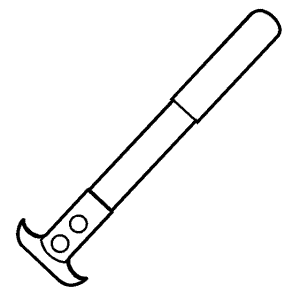 | EN 45000 J 45000 KM J 45000 87 91 360 Herramienta de desmontaje de retenes |

| EN 45027 J 45027 Herramienta tensora |

| EN 45059 J 45059 KM 470-B Medidor de ángulos |

| EN 45299 J 45299 Prelubricador de motor |
|
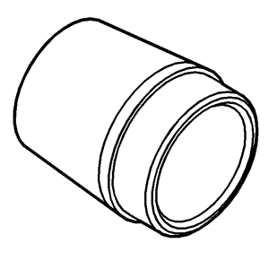 | EN 46101 J 46101 Guía para juntas de tubos de bujías |
|
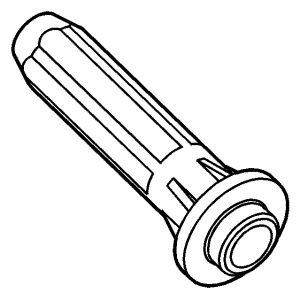 | EN 46103 J 46103 Herramienta de montaje de la junta de la válvula del actuador del árbol de levas |
|
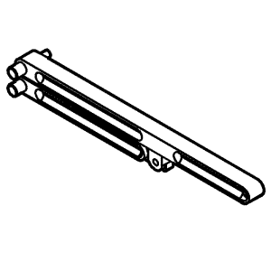 | EN 46104 J 46104 Herramienta de sujeción de la polea de la bomba de agua |
|
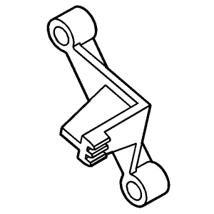 | EN 46106 J 46106 KM 652 Herramienta de sujeción del volante motor |
|
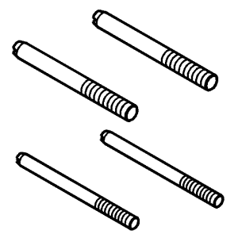 | EN 46109 J 46109 Pasadores guía |
|
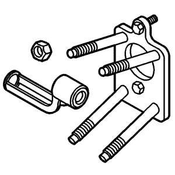 | EN 46110 EN- 46110-EU J 46110-EU Compresor de muelles de válvula en el vehículo |
|
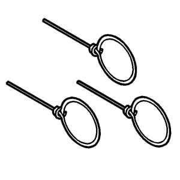 | EN 46112 Pasadores de retracción del tensor |
|
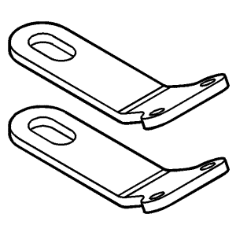 | EN 46114 Soportes de elevación del motor |

| EN 46116 KM 840 (extractor)/EN 47986 (herramienta de montaje) 83 94 157 Herramienta de desmontaje y montaje de la junta de vástago de válvula |
|
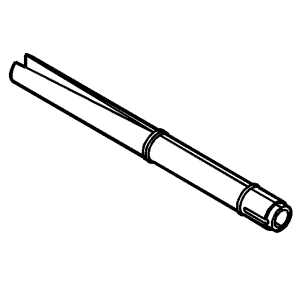 | EN 46117 Herramienta de montaje y desmontaje de la llave del vástago de válvula |
|
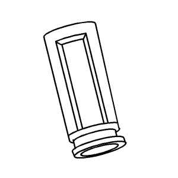 | EN 46119 Adaptador del compresor del muelle de la válvula fuera del vehículo |
|
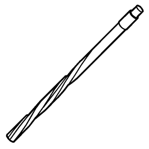 | EN 46120 Escariador de guías de válvula |
|
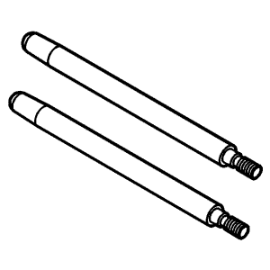 | EN 46121 Juego de pasadores guía para bielas |
|
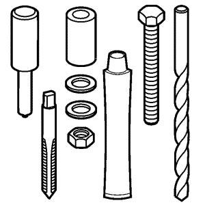 | EN 46122 Herramienta de montaje/desmontaje de válvula de bola - comprobación de actuador de posición de árbol de levas |

| EN 46745 J 43654 Herramienta de desmontaje y montaje de clips de bulón de pistón |
|
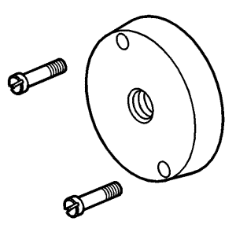 | EN 47839 Herramienta de montaje de la junta de aceite trasera del cigüeñal |
|
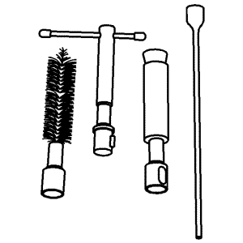 | EN 47909 Juego de limpieza de casquillos e interior de inyectores |
|
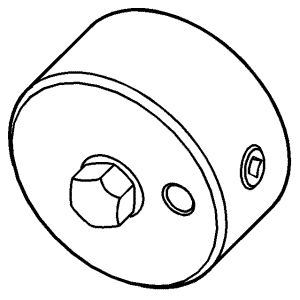 | EN 47971 Adaptador de manómetro de presión de aceite |
|
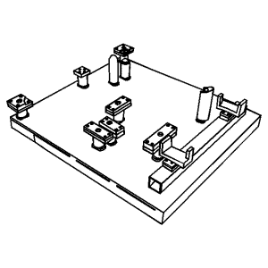 | EN 48243 Palet de instalación/desmontaje del conjunto del motor |
|
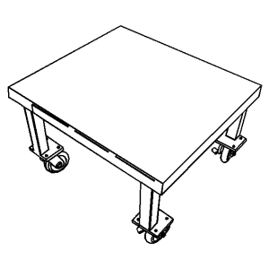 | EN 48244 Soporte del palet de instalación/desmontaje del conjunto del motor |
|
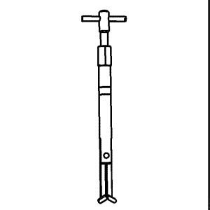 | EN 48313 Herramienta de retención de la cadena de distribución |
|
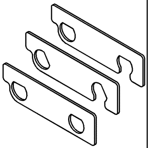 | EN 48383 Herramienta de sujeción de árbol de levas |
|
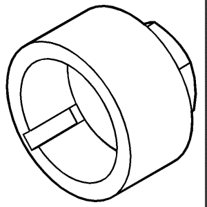 | EN 48589-A EN 48589 Casquillo para girar el cigüeñal |

| EN 48896 Galga de alineación de la instalación de la bomba de combustible HP |
|
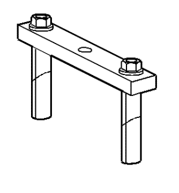 | EN 49102 J 41818 & EN 47985 Herramienta de desmontaje de sombreretes de cojinete del cigüeñal |
|
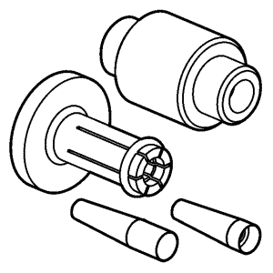 | EN 49245 Juego de herramientas de montaje de juntas de inyector |
|
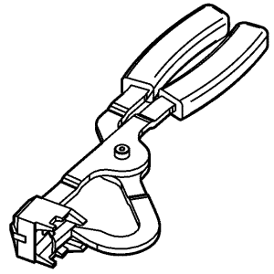 | EN 49247 Herramienta de montaje de clip de retención de inyector |
|
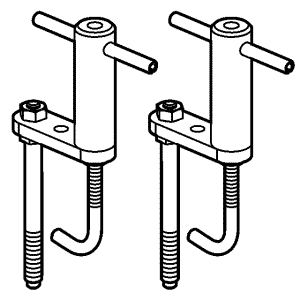 | EN 49248 Herramienta de desmontaje de conjunto de tubo de distribución del combustible |

| EN 49982 Herramienta de sujeción de la cadena de la distribución |

| GE 6125-1-B J 6125-1B KM J 7004 Adaptador del martillo de percusión |

| GE 7872 J 7872 Comparador de pie magnético |

| GE 8001 J 8001 Juego de indicador de cuadrante |

| GE 28428-E J 28428-E Juego de luz negra de alta intensidad |

| GE 48326 Dispensador de sellador |
|
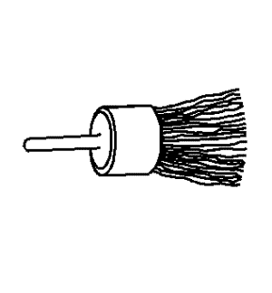 | GE 8358 J 8358 Cepillo de retirada de carbonilla |
|
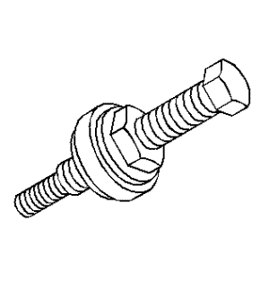 | CH 25033-C J 25033-C Herramienta de montaje de polea |
|
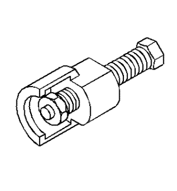 | CH 25034-C J 25034-C Herramienta de desmontaje de polea |

| EN 28467-501 J 28467-501 Adaptadores de dispositivo de soporte del motor |
|
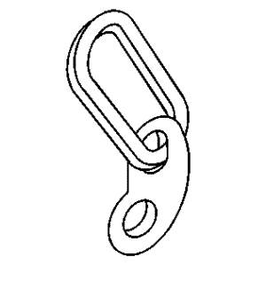 | EN 36857 J 36857 Soporte de elevación del motor |
|
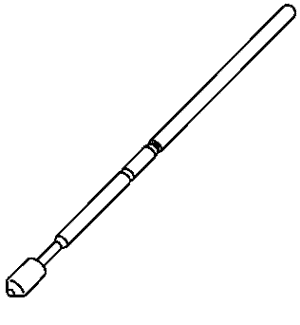 | CH 42640 J 42640 Muñón antirotación de columna de dirección |
| © Copyright Chevrolet Europe. All rights reserved |